ComposteRs
Analysis of Final Survey Results
Abstract
The United States generates over 100 billion pounds of food waste every year. Additionally, 1 in 5 pounds of trash sent to landfills is food waste. What if we could reduce the amount of waste sent to landfills by diverting food waste or other materials? Composting is an environmentally friendly alternative to other waste disposal methods like trash and recycling, though it is not offered as widely as these other services in the USA, including in DC. While composting services exist in DC, participation in these programs is limited. It is an existing process and could be a solution to diverting food waste from landfills, but how can we get people to compost? This project seeks to analyze the market for composting services to identify the ideal program to minimize costs to run the program while increasing participation in composting. A sample of the market for composting services will be surveyed regarding interest in participating in composting programs when the program cost, location, frequency, and accepted materials of the program change. This data assists in designing the service by informing us of customer priorities in composting programs, such as their preference for more accepted materials, lower prices, and disposals picked up at their doorstep similarly to trash services.
Introduction
Composting is a waste disposal method that is restricted to certain materials. Unlike recycling, where waste may still end up in landfills with garbage, composting is a more environmentally friendly way to dispose of natural waste. Composting reduces the amount of waste headed for landfills and recycles nutrients essential to growing plants. Compost can be used as fertilizer in landscaping and agriculture. Composting services are not widely available in the DC, Maryland, and Virginia area, though a variety of services are available to dispose of compost. Despite this fact, a majority of people don’t choose to compost, likely because of financial or inconvenient barriers. Existing programs require the participant to deliver their own compost or pay to participate. This project seeks to identify the ideal service that will circumvent these barriers such that people choose to actually use it. Our program will receive compost, through either pick-up or drop-off, and properly dispose of it.

Existing competitors are privately-provided services which cost money as well as compost drop-off services. Our product may be more convenient than farmers market drop-offs and/or more cost effective than existing compost services, breaking down barriers that prevent people from composting. Market analysis of existing or hypothetical services will allow insight into what the service will look like, with minimum costs to the service provider but enough incentive or convenience that people will begin composting. We will focus on cost, or possible financial incentive, frequency of service and type of service primarily, while also considering other features such as what type of materials are accepted and if a compost container is provided.
Survey Design
Many DC residents already compost, be it in their own backyard or through one of the many programs offered throughout the city. Our survey targets the market of DC residents who live in apartment buildings or similar multi-unit buildings who could adopt composting programs. The eligibility criteria accordingly require the participant to confirm they reside in Washington DC in an apartment building, not a house.
Our survey also inquired about certain demographic information pertaining to the participant. First, our survey asks whether they already compost, because this gives insight into the experience of someone who may have utilized a composting service before regarding what are the key barriers to composting (except education). The survey also asks how many people live in the participant’s household, because this may mean they are more likely to select an service with a higher frequency, because they will likely create more food waste. Next, our survey asks which ward they reside in, because this will help us analyze how residents from different parts of the city may respond differently to survey questions. It may be valuable to know if certain parts of DC would be more interested in composting programs or if different services are preferred by different areas. Finally, our survey asks the participant to identify their occupation, age, gender, and how likely they are to begin composting. This information may help focus our model later on to examine only the effects of our utility model and reduce errors.
Educational information provided to the participants can be seen in the appendix below. In the pilot survey, education information was provided regarding the four attributes and what they each mean. However, in our final survey, we intend to generally provide some information regarding the benefits of composting and what it would mean for them to begin composting, then explain the different attributes.
Four attributes of a composting service are adjusted in eight conjoint questions for each participant. The attributes with their levels can be viewed here:
| Attribute | Levels |
|---|---|
| Location | Door Pick-up, Drop-off |
| Price | $0, $5, $10, $15, $20 per month |
| Materials | Commercial compost, Food waste |
| Frequency | 1, 2, 3, 4 disposals in two weeks |
Location refers to where the disposal happens. The participant may be required to leave it at a similar location to a food delivery for a door pick-up, or may be required to drop it off at a more centralized location depending on this level. Price refers to the monthly cost of the program, if any. Materials refers to the accepted materials by the program. Frequency refers to the number of disposals in a two-week period.
An example of a random conjoint question is shown here.
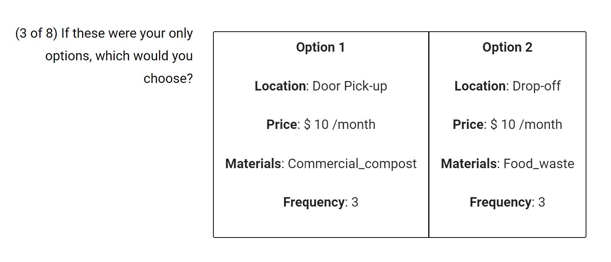
Our team also created a D-efficient conjoint survey design. A limited number of free composting programs exist in select locations across DC, only allowing for drop-off disposal by participants. On the other hand, door pick-up options exist that cost money. Since we anticipate participants will prefer a lower price and a door pick-up option and thus are unlikely to choose a program with a higher price and drop-off, we created this D-efficient design to better reflect the reality of this sort of program and achieve more significant results.
Data Analysis
Sample Description
Our pilot sample had 153 participants who answered all conjoint questions and did not select the same option number for all questions. In total, there were 289 responses, though most of the respondents did not answer many of the questions and thus were filtered out for analysis purposes. This process will be described in the data cleaning section.
We drew the following conclusions regarding the participant pool for our final survey:
- 47% of participants identified as male, 51.2% identified as female, and 1.8% identified as another gender.
- 72.6% of respondents were employed, 7.2% were students, and 18.2% were unemployed.
- The average age of our respondents was 40 years old.*
Regarding compost behavior of our participant pool, we drew the following conclusions:
- 23% of our participants composted at the time of the survey, and 77.6% did not.
- There was a wide range of responses regarding the likelihood that the participant will compost in the next month. However, 30% of participants said they are somewhat likely or very likely to compost in the next month.*
- Location was the biggest barrier to composting according to our participants, with awareness being the second most significant barrier.*
- Other notable barriers to composting recorded by our participants included that it was a hassle, it can be smelly, or that they are unsure of the benefits.
- Some hopeful feedback from participants suggested that our survey inspired them to compost, that they learned something, or that they wished there were more options for composting in the area!
*Several plots were created to observe distribution of these data. These plots can be found in the second section of the Appendix.
Our key demographics for this survey were DC residents who might be interested in joining a composting program for people who live in apartment buildings. Six participants responded to our eligibility questions. From these questions, we obtained the following information from our pilot survey participants:
- 33.9% of survey respondents live in DC.
- 55% of survey respondents live in apartment-style buildings.
Due to limited data, we kept information regarding those who lived outside of DC or in single-family homes, but this would be an opportunity for further analysis.
Data Cleaning
The data cleaning process is a critical step in preparing raw data for analysis. For the compost survey data, several filtering steps were implemented to ensure the integrity and quality of the responses. The dataset initially contained 289 rows.
The first filter was applied to exclude responses where participants chose the same option for each conjoint question, reducing the dataset to 199 rows. This step was crucial to ensure the validity of the analysis, as it aimed to eliminate responses that may have been chosen randomly, offering little insight into consumer preferences.
Next, the process focused on ensuring that all multiple-choice questions were answered. This step did not further reduce the number of responses, as all 199 rows had completed these questions. Subsequently, a time-based filter was employed to exclude respondents who completed the survey unusually quickly. By calculating the total time required for each respondent and removing those who finished in less than the tenth percentile of completion times, the dataset was refined to 179 rows. This was a critical step to avoid rushed, and potentially less reliable, responses.
Another standard survey practice implemented was the removal of respondents who incorrectly answered the attention check question. This filter further reduced the dataset to 174 rows, ensuring that the remaining respondents were paying attention and not answering questions arbitrarily. This question was manually created with specific values for each attribute such that one option has a preferable location, price, frequency, and accepts all materials. Responses from participants who do not choose this option and instead select the option with less convenient location and higher price will not be considered in further analysis. See this question below.
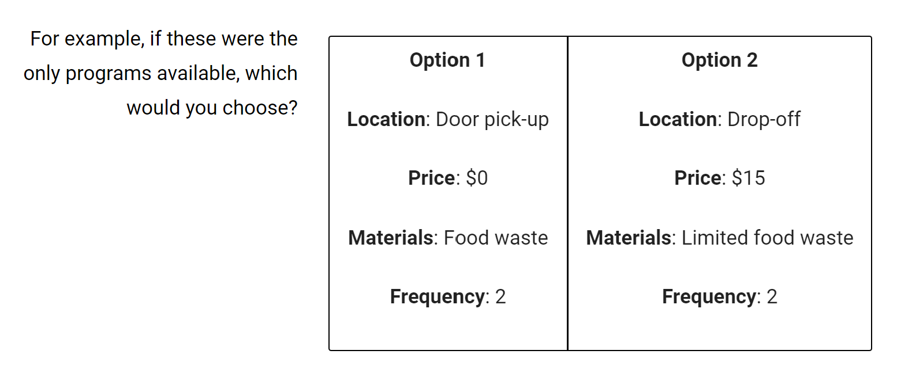
The final filtering step involved the removal of responses with a high number of NA values, crucial for maintaining data quality. Excessive missing values can lead to skewed analyses and unreliable results. After this filter, the dataset contained 153 rows.
For data neatness and accuracy, the age of the respondents was recalculated. Overall, out of the initial 289 responses, 153 were deemed suitable for analysis. Each step of this rigorous filtering process was justified and aimed at ensuring complete, engaged, and attentive participation in the survey. This meticulous approach enhances the reliability of subsequent analyses and ensures that conclusions drawn from the data are based on high-quality and relevant information.
Modeling
Simple logit model
We estimated a utility model based on the results of our pilot data analysis. See the model here:
\[ u_j = \beta_1 x_j^{price} + \beta_2 x_j^{frequency} + \beta_3 \delta_j^{dropOff} + \beta_4 \delta_j^{foodWaste} + \beta_5 \delta_j^{limitedFoodWaste} \]
A summary table of utility estimates with standard errors can be seen here:
| Coefficient | Estimate | Std. Error |
|---|---|---|
| price | -0.159154 | 0.002870 |
| frequency | 0.104253 | 0.032232 |
| foodWaste | -0.229956 | 0.081343 |
| doorPickUp | 0.449328 | 0.078430 |
From these results for the utility model, we see a negative coefficient for price and food waste, and limited food waste. These results make sense, because lower prices are more preferable. Most notably, we see statistical significance and low standard errors for price. Consumers might prefer the option to compost more materials, so the materials coefficient has negative values as well, though these results are not so significant. Door pick-up was the most significant next to price, with a positive value indicating that people prefer the door pick-up option. This is more convenient to people than a drop-off option. Lastly, frequency has a positive value indicating consumers might prefer a higher frequency of disposals, but it has less statistical significance.
Using the values from the table, we can pose this utility model:
\[ u_j = -0.159154 x_j^{price} + 0.104253 x_j^{frequency} + 0.449328 \delta_j^{doorPickUp} + -0.229956 \delta_j^{foodWaste} + \epsilon\]
A visualization of these coefficients with standard error bars was created, and can be seen here:
We can also assess the uncertainty associated with each attribute coefficient by plotting the 95% confidence interval around the estimated values. Given the relatively limited response data in our study, it is anticipated that the uncertainty around these coefficients will be considerable. This visualization will provide insights into the range within which the true values of the coefficients are likely to fall, considering the inherent variability in our dataset. The wider the confidence interval, the higher the uncertainty, underscoring the importance of acknowledging the limitations in our data and the need for further exploration as the study progresses.
The findings related to the price attribute align with our initial pilot analysis, confirming the intuitive expectation that utility experiences a decrease with an increase in price. The respondents express a preference for composting programs with a higher frequency, suggesting that a greater number of disposals within a given time frame positively influences the perceived utility of the service.
The above graphs suggest that location i.e. door pickup or drop off and materials i.e. commercial compost or food waste both do not have an impact on utility for composting.
We built a 95% confidence interval to better understand the estimates created in the simple logit model, which can be seen here as well.
| Coefficient | Lower | Mean |
|---|---|---|
| price | -0.1584548 | 0.021821 |
| frequency | 0.1035627 | 0.030809 |
| foodWaste | -0.2300362 | 0.081348 |
| doorPickUp | 0.4501291 | 0.078333 |
Mixed logit model
Our team also investigated the application of a mixed logit model to determine if another model might have a better fit for our data. With this model, we saw the following results:
| Coefficient | Estimate | Std. Error |
|---|---|---|
| price | -0.1584548 | 0.021821 |
| frequency | 0.1035627 | 0.030809 |
| foodWaste | -0.2300362 | 0.081348 |
| doorPickUp | 0.4501291 | 0.078333 |
| sd_price | 0.0107307 | |
| sd_frequency | -0.0077245 |
Note that the estimates and standard error values are each less than 0.02 different from the estimates from the simple logit model, and the standard deviations were relatively low. Since this did not seem to provide an improved fit, we ran a grouped logit model as well to determine if another model might provide a better fit.
Grouped Model
Our team’s hypothesis suggests that the study reveals variations in how people’s choices are shaped by factors such as price, frequency, location, and materials, especially when considering different groups—likely connected to where they are located. This suggests that preferences or responses can vary among these groups. The details provided by coefficients for ‘location’ and ‘materials’ shows how these aspects tweak the impact of other factors on choices within these diverse groups. The analysis aims to pinpoint differences in observed utility linked to composting practices.
| Coefficient | Lower | Mean |
|---|---|---|
| price | -0.159154 | 0.022870 |
| frequency | 0.104253 | 0.032232 |
| foodWaste | -0.229956 | 0.081343 |
| doorPickUp | 0.449328 | 0.078430 |
We plotted our results with a 95% confidence interval and observed the following deviations from our simple logit model.

We can say that, Greater ‘frequency’ has a favorable effect on selection, but higher ‘price’ has a negative effect. A preference is expressed against ‘location_drop_off,’ and selection is less likely when ‘materials_food_waste’ is included. These results are validated using confidence intervals.
Results
Using the simple logit model identified above, we compute the willingness to pay (WTP) of different product attributes. The mean WTP and upper/lower bounds of a confidence interval for WTP for each attribute can be seen in this table:
| Attribute | Mean WTP | Lower Bound | Upper Bound |
|---|---|---|---|
| frequency | 0.6570614 | 0.2773286 | 1.0401082 |
| foodWaste | -1.4744895 | -2.6111511 | -0.4734998 |
| doorPickUp | 2.8728730 | 1.8938058 | 4.1002900 |
We also plotted WTP with respect to different attributes, which can be seen here.
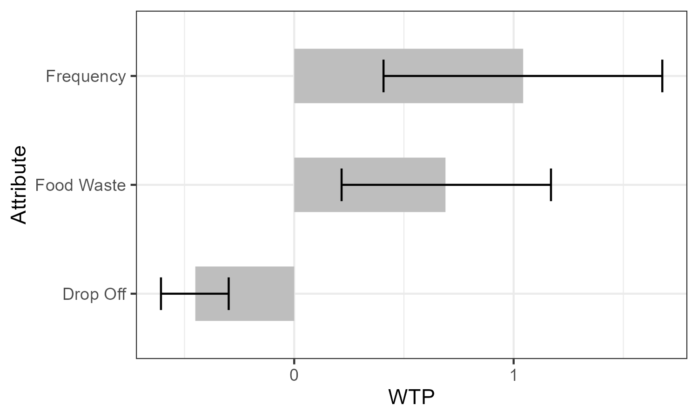 We can see that customers are willing to pay more for higher frequency, food waste, and they are less willing to pay for drop-off than door pick-up. However, willingness to pay is considerably low for all three features. People are willing to pay an additional $2.87 for door pick-up, an additional $0.66 for each added disposal in the two-week period, and an additional $1.47 for commercial compost according to this table.
In the modeling part, we found out that the materials and location didn’t have that much impact in the utility. Same result we found out for the impact on wtp values. There is no change in wtp values in response to materials and location.
We then created a market scenario for our product attributes. We calculated market simulated shares with 95% confidence intervals. We first created a single market simulation using a linear model.
We plotted the bar plot for this single market simulation.
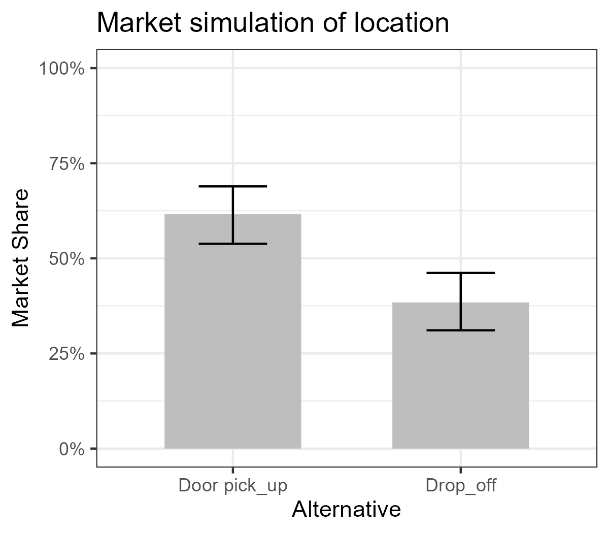
From the plot we inferred that people prefer door pick_up more than drop_off which is an expected one as people obviously wouldn’t want it to become a hassle for them.
Now we calculated market simulated shares with 95% confidence intervals for multiple markets.
We plotted the bar plot for this simulation.
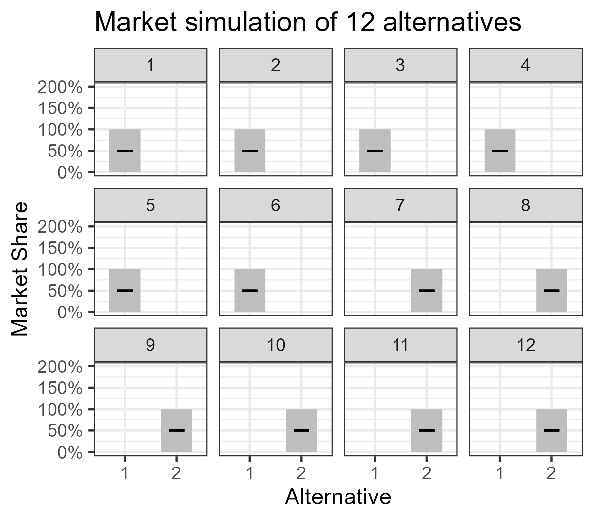
From the 12 plot simulations, we can infer that the user’s choice is evenly poised as half prefer 1 and the other half prefer 2.
For the checking the sensitivity of our data, we plotted the line plot for market share vs price.
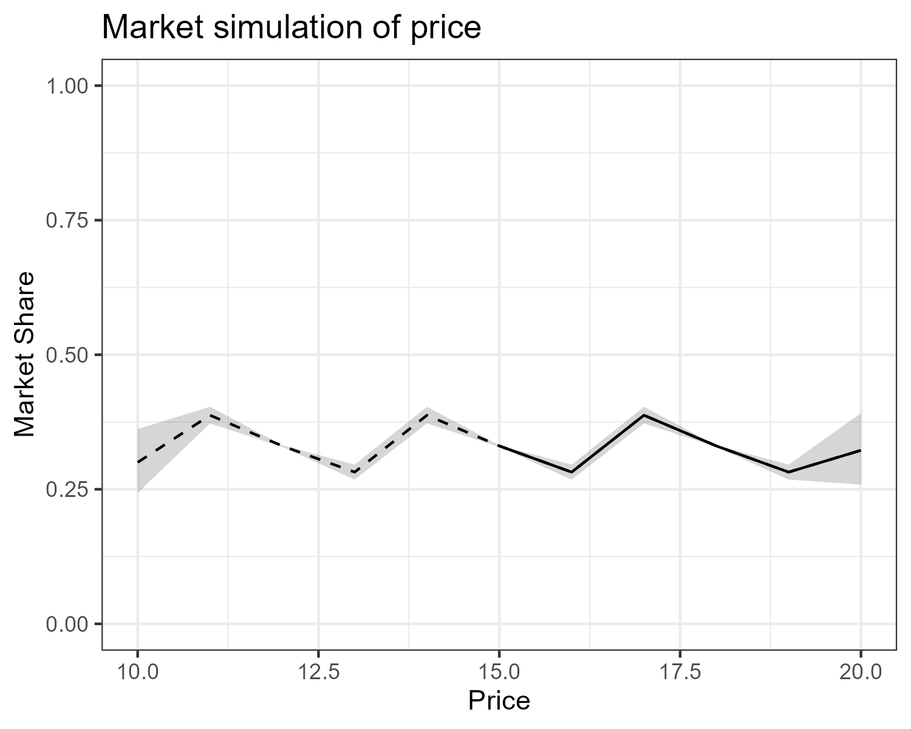
We set the price range from 10 to 20 and conducted the simulation. Dotted line indicate the full range of prices. Solid line indicates the prices included in our survey.
We then calculated how the price affected our revenue sensitivity using the same line plot.
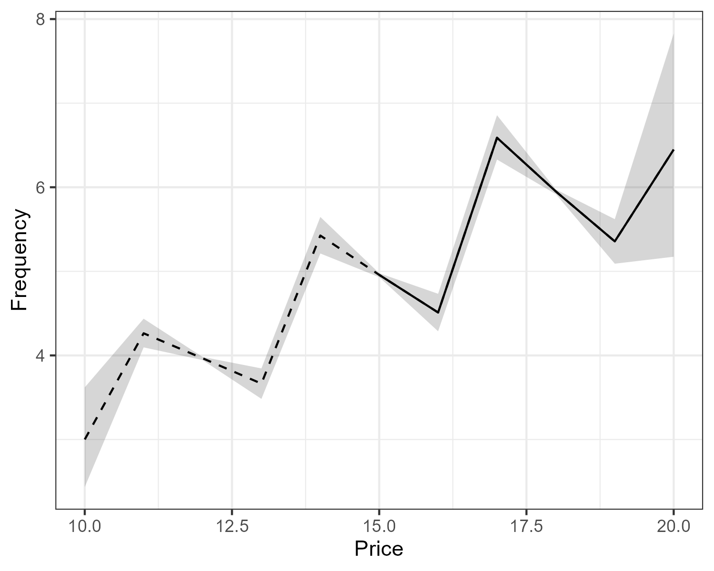
We got the expected results. The revenue increased rapidly in response to the price. In this plot the price range for our model is from 15 to 20.
We also did a tornado diagram of market share across our numerical attributes.
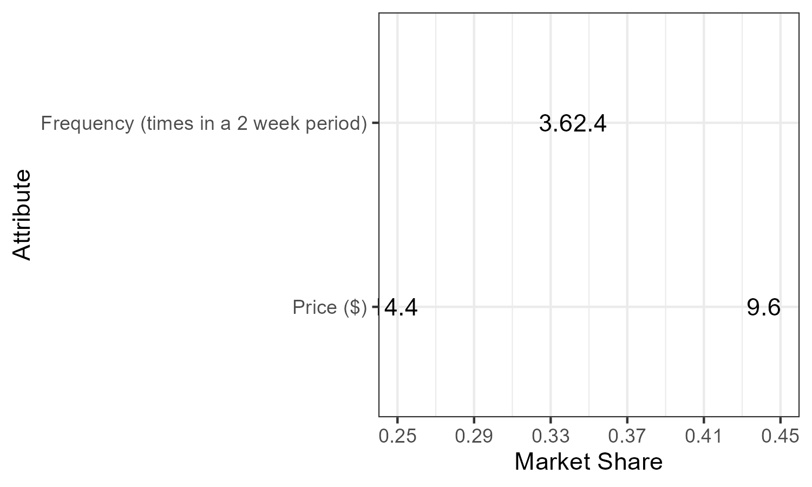
We can infer that in case of frequency, it is equal which states that frequency doesn’t have much impact on the market shares when compared with other attributes. But in case of price, we can see high market share with respect to attribute.
Final Recommendations and Conclusions
Existing composting services do not meet the convenience and cost needs of the consumers. A new composting service does have the potential to be competitive against current competitors. There are two types of existing competitors in DC for this market: free disposal at farmers market drop-offs, or costly disposal with the convenient door pick-up. Based on our analysis, we recommend proceeding with this project if it is possible to keep the costs low and provide a door pick-up option.
People are willing to pay an additional $2.87 for door pick-up, an additional $0.66 for each added disposal in the two-week period, and an additional $1.47 for commercial compost according to this table. If we examine the 95% confidence interval for the average WTP above, there are considerable errors for each of these values. However, none of the confidence intervals contain 0, so we are confident that the sign of the mean WTP is estimated correctly. For example, the confidence interval for the mean WTP for door pick-up is [1.894, 4.100]. While this is not completely indicative of the value that customers are willing to pay for a service with door pick-up, we are confident that they are willing to pay more for this option than for services with drop-off disposal instead.
The goal of this project was to identify a composting service that would break down barriers to get more people to compost due to its environmental benefits. Based on the results of this analysis, we recommend a composting service which offers pick-up disposal at the customer’s door of commercial compost materials.
Limitations
To improve this analysis, we primarily recommend collecting more data. A larger set of customer preference data from the conjoint survey would likely reduce the error and allow us to determine estimates for our utility model with more confidence. Additionally, more data regarding frequency might provide insight into the distribution of this variable which may be non-linear. Participants in our study also noted other barriers that prevent them from composting, so these could also be used as attributes in a survey to understand if there are other significant preferences that should be investigated.
Another route that could be taken to improve the recommendations from this analysis would be to research the costs of offering this service. This would be informative to compare the customer willingness-to-pay with the actual costs of the service.
Attribution
- Nandhini wrote code to clean data and wrote the data-cleaning section.
- Raghav wrote code to generate models and to plot these models and drafted the modeling section.
- Ashhwath wrote code in the analysis file and wrote the analysis section.
- Eliese edited code and writing, integrated the team’s files, and wrote all sections of the report except data-cleaning, modeling, and results.
Appendix
Survey
Our full survey (excepting the pages with conjoint questions 2-8) can be seen here.


Additional Participant Information
The following plots helped us explore the distributions of some of our participant information as described in the sample description.
 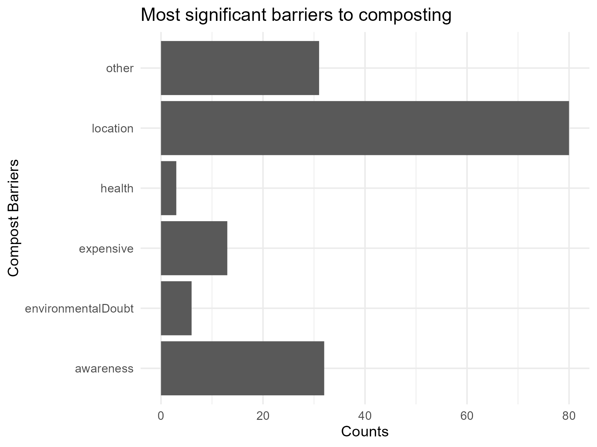
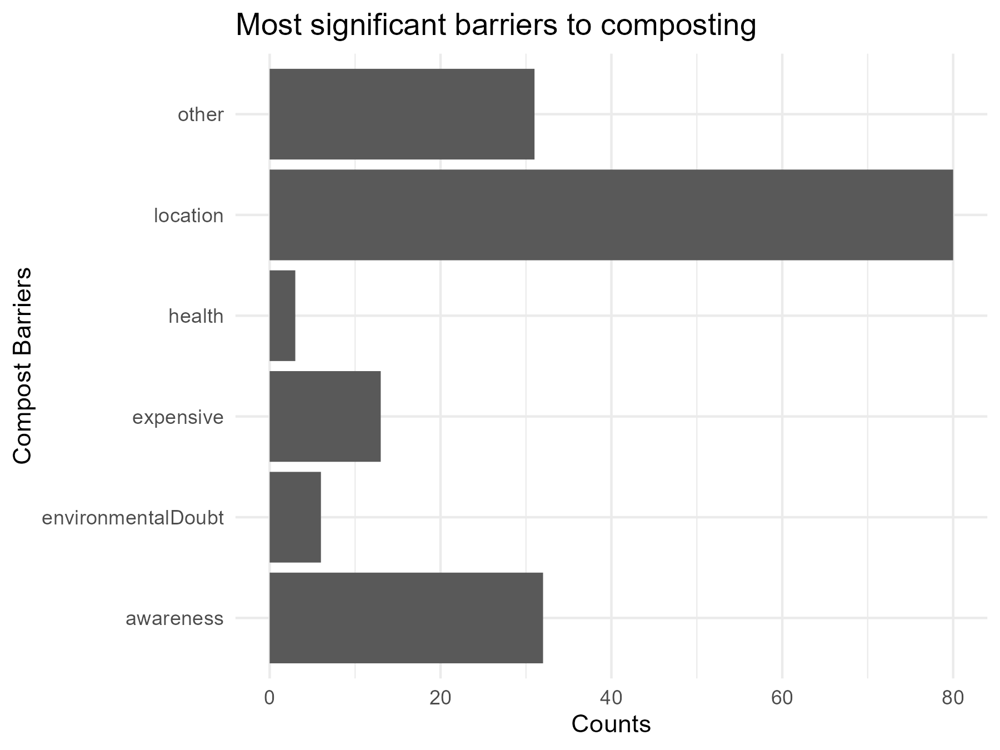